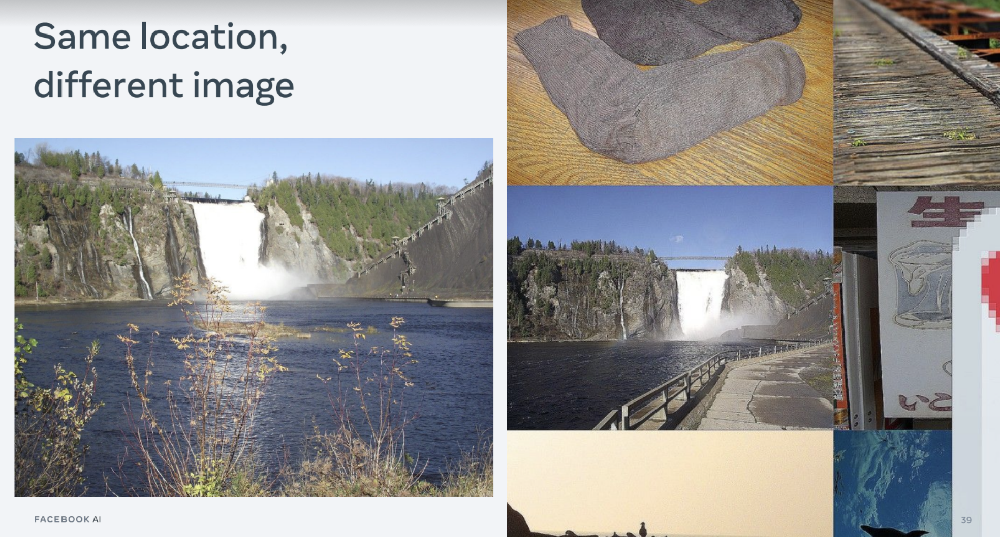

What is Image Similarity Challenge?
Image Similarity Challenge is benchmark of the methods, which should find the original in the database (if any) by the edited query image. The main difference to the classical instance retrieval task (datasets Oxford5k, GLD, etc) is that we should NOT retrieve the different photos of the given instance. Instead only version of the same photos are valid. In other words, we are looking for the image forgery and copyright infringement.
Image Similarity Dataset (DISC)
The dataset is described in the “The 2021 Image Similarity Dataset and Challenge” paper. It is created by processing YCC100M and DeepFake Detection Challenge images with manually in GIMP editor and automatically with help of AugLy library.
Besides the public part of the test set (Phase I of the competition), there is also final test set (Phase II) was also composed with use of adversarial attack methods and so-called “air-gap attack”. Air-gap, according to the paper is
We asked manual editors to perform “air-gap” transformations, where the picture is displayed or printed out, and re-captured with a camera or mobile phone. It is a quite common image attack, that is hard to reproduce automatically or even with an image editor like the GIMP. Figure 8 shows an example air-gap augmentation (the zebra). The effect is a combination of over-exposure, geometric framing and blurriness on the picture.
The paper also provides several baselines, mostly based on global and local descriptors
Tracks: Descriptor track and Matching track
The competition had 2 tracks.
Descriptor track expects participant to submit global image descriptors, up to 256-dim, which should be compared by L2 distance. Matching image pairs should have small descriptor distances, while non-matching - large.
Matching track, where the model can do any pairwise (but only pairwise!) comparisons to get the similarity score between two images.
Below I will overview the winning solutions, presented at the NeurIPS2021 workshop. But first let me show you a couple of slides from the organizer’s analisys.
The easiest image transformations are geometrical ones, except cropping the image to a very small size. The hardest ones are those, which involve combination of several images. The global descriptors are very sensitive to image rotatio and vertical flip (not really surprising).
The models are more or less reasonably robust to adversarial attacks, except really strong ones.
Finally organizers found that have not done enough de-duplication in the dataset, meaning that models were able to discover the duplicates in the dataset. While some of this annotation errors were genuine, others were in the gray zone.
For example, images, which were taken from the different positions, but the background object DOES look identical. Another example is the camera burst, where the part of the content, which is not the same across the burst images ended up cropped out by annotators or automatic procedure.

Descriptor track
1st place: Contrastive Learning with Large Memory Bank and Negative Embedding Subtraction for Accurate Copy Detection
by Shuhei Yokoo aka lyakaap.
The method takes ImageNet-21k-pretrained EfficientNetv2 from timm and trains it with contrastive loss, gradually increasing the augmentations intensity, as well as image size. Final augmentations are quite strong, see the image below. The loss is the simple constrastive loss with memory bank for the hard negatives.
Finally, Shuhei Yokoo proposes novel postprocessing technique - to subtract hard negative embedding from all database image embeddings. It added nice final boost to the submission.
2nd place: Producing augmentation-invariant embeddings from real-life imagery
by Sergio Manuel Papadakis and Sanjay Addicam
The method relies on the GeM descriptors ( trained EfficientNetv1, EfficientNetv2, NfNet) with ArcFace loss. ArcFace loss assumes classification, not contrastive setup and hard to train with >1M classes. That is why the method gradually increases the number of classes (images used to train) and the classifier head is re-initialized with centroids, obtained from backbone descriptors from the previous stage. Multiple models are combined by Concat -> PCA -> L2Norm.
Finally, the embeddings are modified, to take into account the most similar images from the database, similar to the 1st place, but in a bit more complicated way.
3rd place: Bag of Tricks and A Strong baseline for Image Copy Detection
by Wenhao Wang, Weipu Zhang, Yifan Sun, Yi Yang
The method uses ResNet50 backbone, pretrained in augmentation-supervised fashion (BarlowTwins, unlike 1st and 2nd place, which used supervised pretrained EfficientNetv2. The model is trained with a combination of triplet and cross entropy losses with GeM pooling and WaveBlock. Finally, authors also present hard-negative aware embedding de-normalization called “descriptor stretching” – different variant of the similar idea, also used in 1st and 2nd place post-processing.
Note that before descriptor stretching, results are much weaker than in 1st and 2nd place, but after the post-processing, the margin shrinks
Matching track
1st place D2LV: A Data-Driven and Local-Verification Approach for Image Copy Detection
by Wenhao Wang, Yifan Sun, Weipu Zhang, Yi Yang (3rd place in descriptor track).
The method relies on several ideas:
- Training specialist models on the different augmentations, e.g. “basic”, “basic+superdark”, “basic+superblur”, etc.
- Different ways of splitting the image into the subparts: by YOLOv5 object detection, by 4x4 even split, by rotating the original image, etc, each of which is then “matched” by the global descriptor similarity to the right-hand image. Local-to-global means “we aplit query and match vs reference image”, whereas “global-to-local” - - “we match whole query image to splitted reference”.
2nd place: 2nd Place Solution to Facebook AI Image Similarity Challenge: Matching Track
by SeungKee Jeon.
The paper uses a simple approach of concatenating query and reference image and feeding such collage into the vision transformer (ViT).
ViT embeddings are also used to create a short-list for the matching, trained with contrastive loss (SimCLR).
Similarly to the 1st place, SeungKee Jeon also used image-to-sub-images (1 -> 2x2, 1->3x3) splitting technique at test time.
3rd place: A Global and Local Dual Retrieval Solution to Facebook AI Image Similarity Challenge
by Xinlong Sun, Yangyang Qin, Xuyuan Xu, Guoping Gong, Yang Fang, Yexin Wang
This method is probably the most hand-engineered.
- The images are pre-processed with overlay-detection – out-of-the-box YOLOv5. Detected overlays are treated as a separate images.
- The global descriptor EsViT (Swin-B) is pretrained in self-supervised fashion on ImageNet, then with contrastive loss on the challange dataset, with hard-negative memory bank.
- Resize images to 300px -> SIFT features (~600 per image) -> 600M descriptors. Use brute-force search in faiss with fp16 precision. That takes 165Gb memory, fit with 8 V100 GPUs. Threshold the descriptor distance first, the number of matched features second.
According to the ablation study, SIFT was significantly worse, than global EsViT descriptor in Phase I, but significantly boosted overall score in Phase 2.
Conclusion & my speculations
Edited image copy detection is a challenging task, which is, nevertheless solvable to some practical extent with existing techniques. It is interesting, the all 3 winners in descriptor track come up with a similar idea of contextualized database image embeddings with hard negatives.
I also don’t believe that the supervised/unsupervised pretraining and transformer/CNN architecture matter as much, as participants were reporting – precisely because different teams succesfully used different architectures and pretraining. Once one optimized the training procedure for the selected architecture, the differences would probably disappear.
The matching track pipelines are quite complex and computationally demanding. Nevertheless, using local features (or at least sub-image matching) noticably improves the score. My personal favorite is the 2nd place in the matching track for its originality and simplicity.
What would be interesting, is to check how much one looses when using visual-words tf-idf encoding for the local features matching, instead of keeping original descriptors.
Challenge organizers also announced the join paper with winners, overviewing the competition and the best approaches some when in February (i.e. soon). Stay tuned :)
Everything you (didn’t) want to know about image matching